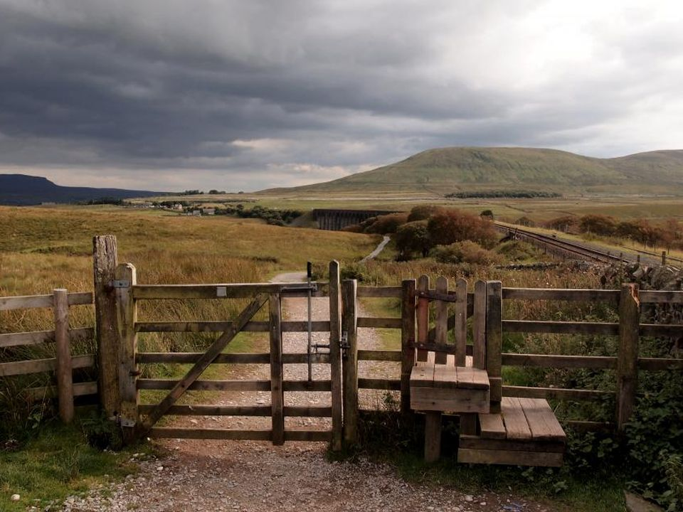
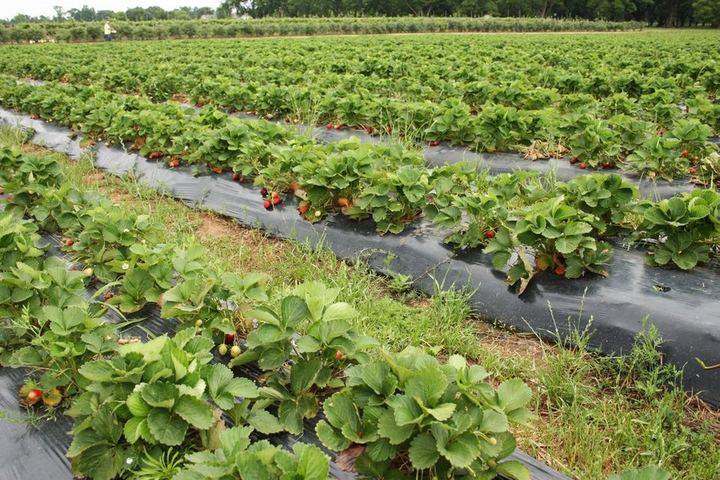

Plan your visit
Come and pick your own at Brookmoor
Everything you need for a day on the farm: how picking works and what it costs, a map of the fields, when we’re open, how to find us, and where you and the dog can go.
- Farm shop open Tuesday to Sunday
- Free parking
- Dogs on leads welcome

Pick your own
How picking works
The fields are open daily from 9am to 5pm between June and October, with last entry at 4pm. No booking, no entry fee: you only pay for what you pick.
-
Check the board
We chalk up what’s ready by 8am, on the picking board online and on the sign at the gate.
-
Start at the hut
Collect punnets and trugs at the picking hut, or have your own containers weighed empty.
-
Pick the flagged rows
Yellow flags mark the rows that are ready today. Pick gently, and leave the rest to ripen.
-
Weigh and pay
Bring everything back to the hut to be weighed. We take card and cash, and there’s a tap for sticky hands.
What to bring
Tick things off as you pack. Your ticks are remembered on this device.

Picking prices
| Crop | Season | Price |
|---|---|---|
| Strawberries | June to September | £5.20/kg |
| Raspberries | July to October | £8.40/kg |
| Gooseberries | June to July | £4.80/kg |
| Blackcurrants | July to August | £5.60/kg |
| Blackberries | August to September | £6.00/kg |
| Plums | August to September | £3.60/kg |
| Apples and pears | August to October | £2.80/kg |
| Broad beans and peas | June to August | £4.00/kg |
| Sweetcorn | August to October | 70p each |
| Pumpkins | October | from £3 each |
Farm map
Find your way round the fields
Everything is within a ten-minute walk of the yard. Choose a place to see what’s there.
Choose a place to highlight it on the map. Swipe the map sideways to see all of it.
Farm shop
The old threshing barn. Pay for your picking, buy eggs, honey and the day’s veg. Toilets and baby change are round the side.
Opening times
When we’re open
Farm shop open Tuesday to Sunday
Farm shop
| Monday | Closed honesty fridge open |
|---|---|
| Tuesday | 8:30am – 6pm |
| Wednesday | 8:30am – 6pm |
| Thursday | 8:30am – 6pm |
| Friday | 8:30am – 6pm |
| Saturday | 8am – 6pm |
| Sunday | 9am – 4pm |
Bank holidays 9am–4pm. Closed 25 and 26 December and 1 January.
Fields and extras
| Pick your own | Daily 9am – 5pm June to October, last entry 4pm |
|---|---|
| Pumpkin patch | Daily 9am – 5pm 17 October to 1 November |
| Guided farm walk | Wed & Sat 10:30am about 90 minutes, book ahead |
| Honesty fridge | Daily 7am – 9pm eggs, milk and butter by the gate |
| Hedge walk | Dawn to dusk free, all year |
The fruit fields close in heavy rain or high wind. We post any closure on the picking board by 8am.
Getting here
Down Mill Lane, over the stone bridge
We’re a mile and a half outside Wexcombe. Sat navs bring you to the gate, but the last stretch is single track, so take it slowly.
By car
From the A350 at Wexcombe Cross, follow the brown farm signs onto Mill Lane. The entrance is on the left, straight after the stone bridge.
By bus
The 58 between Wexcombe and Shaftesbury stops at Brookmoor Cross every hour. It’s a five-minute walk down the lane on a footway.
By bike
We sit on the quiet-lanes Vale Loop. There are cycle hoops by the shop, and a free drink of apple juice for anyone who rides in.
By train
Wexcombe Road station is 6 miles away. Taxis wait at the rank, or ring Vale Cars on 01747 555 090 to book ahead.
Accessibility
Getting round the farm
Most of the farm is flat. If you have a question about a particular need, ring the shop and we’ll talk it through.
- Blue badge parkingTwo wide bays on tarmac beside the shop door.
- Level shop and yardStep-free entrance, wide aisles and a lowered till.
- Tabletop strawberriesRaised rows at waist height, with the first row reachable from a seat.
- Firm grass pathsMown paths to the orchard and fruit fields suit wheelchairs and buggies in dry weather.
- Loan kit at the hutA manual wheelchair and a picking trolley, free to borrow.
- Accessible toiletWith baby change, beside the shop, open whenever the fields are.
- Quiet hourTuesdays 8:30 to 9:30am: no music, fewer people, staff on hand.
- Assistance dogsWelcome everywhere on the farm, fields included.
Bringing the dog
We love dogs, but they can’t go where food is grown or picked. Please keep them on a short lead everywhere on the farm.
Welcome
- Car park and yard
- Shop courtyard and benches
- The hedge walk
- Picnic meadow
Not allowed
- Fruit fields and orchard
- Inside the farm shop
- Hen paddock fence line
- Pumpkin patch
Water bowls and a shaded tie-up rail are by the shop door, and there are dog bins at both ends of the hedge walk. Assistance dogs are welcome everywhere.
Visitor FAQ
Questions we get asked at the gate
Do I need to book to pick my own?
No. Turn up any time the fields are open, from 9am to 5pm with last entry at 4pm. Only the guided farm walk and our workshops need booking.
Is there an entry fee?
There’s no charge to come in or walk the fields. You pay for what you pick by weight, and punnets cost 20p each if you don’t bring your own.
How do I know what’s ready before I set off?
Check the picking board, which we update by 8am every day, or sign up to the Thursday bulletin for picking alerts. In a glut we’ll say so; after heavy rain we sometimes close a field for the day.
Can children pick?
Of course. The tabletop strawberries are the right height for small hands. Please keep children with you in the fields, and ask them to leave the green fruit for another day.
Can we eat while we pick?
A taste to check the ripeness is fine. We’d ask you to weigh and pay before eating the rest; the picnic meadow is the place for that.
What happens if it rains?
Light rain doesn’t stop us, and the fruit is often at its best the morning after. In heavy rain or wind we close the fields for safety and post it on the picking board.
Do you take card payments?
Yes, contactless and chip and PIN at the picking hut and in the shop. The honesty fridge takes cash or a card reader on the wall.
Can we bring a group or a school class?
We host schools and groups of up to 40 on weekday mornings, with a farm walk and a picking session. Email hello@example.com with your dates and numbers.
Can’t make it out this week?
Order from the farm shop for collection, or have a veg box delivered every Thursday.